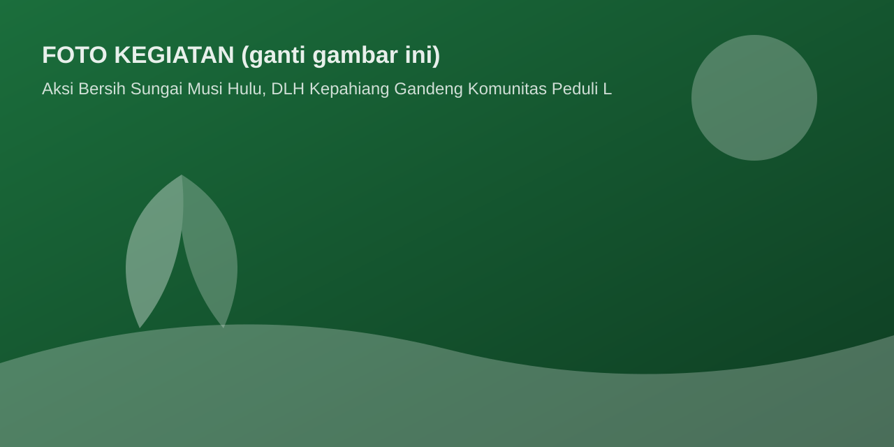

DINAS LINGKUNGAN HIDUP
Pemerintah Kabupaten Kepahiang — Provinsi Bengkulu
Berita • 05 Juli 2026 • Admin DLH

KEPAHIANG — Dinas Lingkungan Hidup Kabupaten Kepahiang bersama komunitas peduli lingkungan dan masyarakat melaksanakan aksi bersih sungai di kawasan hulu Sungai Musi. Kegiatan ini merupakan bagian dari upaya menjaga kualitas air sungai yang menjadi sumber kehidupan masyarakat.
Kegiatan diikuti oleh unsur perangkat daerah, komunitas peduli lingkungan, pelajar, serta masyarakat sekitar. Kepala Dinas Lingkungan Hidup Kabupaten Kepahiang menyampaikan bahwa kegiatan seperti ini merupakan wujud nyata kolaborasi pemerintah dan masyarakat dalam menjaga kelestarian lingkungan.
“Kami mengajak seluruh masyarakat Kepahiang untuk terus berperan aktif menjaga kebersihan lingkungan, memilah sampah dari rumah, dan merawat sungai kita bersama-sama,” ujarnya.
Ke depan, DLH Kabupaten Kepahiang akan terus menggencarkan program serupa secara berkala di seluruh kecamatan.
Catatan: Ini adalah halaman contoh (template) detail berita. Untuk menambah berita baru: salin berkas berita-detail.html, ganti judul, tanggal, foto, dan isi, lalu tambahkan tautannya di berita.html dan beranda.